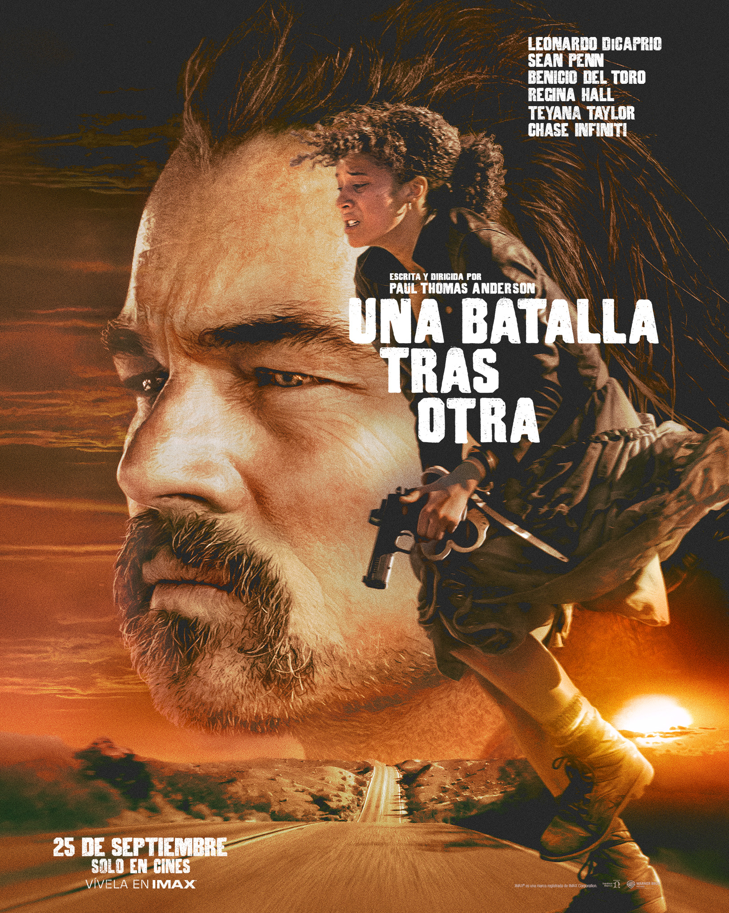
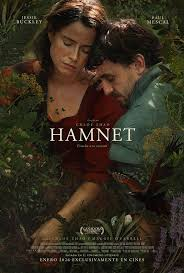

Puesto 1: Scream 7
2026 · 1h 54m · Terror
Reparto: Neve Campbell, Isabel May, Courteney Cox, Jasmin Savoy Brown, Mason Gooding
Director: Kevin Williamson
Valoración: 5,9/10

Sinopsis: Cuando un nuevo asesino Ghostface aparece en el tranquilo pueblo donde Sidney Prescott ha construido una nueva vida, sus peores pesadillas vuelven. Todo se vuelve aún más aterrador cuando su hija se convierte en el nuevo objetivo del asesino. Decidida a proteger a su familia, Sidney deberá enfrentarse a los horrores de su pasado para poner fin al derramamiento de sangre de una vez por todas.
Trailer
Puesto 2: El engaño
2026 · 1h 43m · Acción
Reparto: Priyanka Chopra Jonas, Karl Urban, Safia Oakley-Green, Ismael Cruz Cordova
Director: Frank E. Flowers
Valoración: 5,8/10

Sinopsis: Cuando su vida tranquila en una isla remota se ve truncada por el regreso de su vengativo excapitán, una hábil expirata llamada Ercell "Bloody Mary" Bodden debe enfrentarse a su sangriento pasado y dar rienda suelta a sus mortales talentos para salvar a su familia de un asedio despiadado en las Islas Caimán.
Trailer
Puesto 3: Cumbres borrascosas
2026 · 2h 16m · Drama
Reparto: Margot Robbie, Jacob Elordi, Hong Chau, Shazad Latif, Alison Oliver
Directora: Emerald Fennell
Valoración: 6,3/10

Sinopsis: Nueva adaptación del clásico de Emily Brontë que narra la intensa y destructiva relación entre Heathcliff y Catherine Earnshaw en los páramos de Yorkshire. Tras ser criados juntos, su romance se ve frustrado por las barreras sociales, lo que desencadena una espiral de venganza, obsesión y destrucción que marcará a ambas familias durante generaciones.
Trailer
Puesto 4: Marty Supreme
2025 · 2h 29m · Deportes
Reparto: Timothée Chalamet, Gwyneth Paltrow, Odessa A'zion, Tyler the Creator, Kevin O'Leary
Director: Josh Safdie
Valoración: 7,8/10
Sinopsis: Ambientada en la vibrante Manhattan del siglo XX, la película sigue a Marty Mauser, un joven buscavidas con una ambición desmesurada que descubre su don para el ping pong en los clubes clandestinos de la ciudad. Con ayuda de figuras inesperadas, está dispuesto a todo para cumplir su sueño y convertirse en campeón, arriesgándolo todo en el proceso. Inspirada libremente en la vida del legendario jugador Marty Reisman.
Trailer
Puesto 5: La asistenta
2025 · 2h 11m · Thriller
Reparto: Sydney Sweeney, Amanda Seyfried, Brandon Sklenar, Michele Morrone
Director: Paul Feig
Valoración: 6,8/10
Sinopsis: Millie, una joven con un pasado complicado, comienza a trabajar como asistenta interna en la lujosa mansión de los Winchester, una pareja adinerada y aparentemente perfecta. Lo que empieza como un trabajo soñado pronto se convierte en algo mucho más peligroso: un juego seductor de secretos, escándalos y poder donde nada es lo que parece. Basada en la novela de Freida McFadden.
Trailer
Puesto 6: En un instante
2026 · 2h 13m · Ciencia Ficción
Reparto: Rashida Jones, Kate McKinnon, Daveed Diggs, Jorge Vargas, Tanaya Beatty
Director: Andrew Stanton
Valoración: 6,0/10
Sinopsis: Tres historias interconectadas que abarcan miles de años se entrelazan para reflexionar sobre la esperanza, las relaciones humanas y el ciclo de la vida. Cada historia muestra cómo las decisiones y relaciones de los personajes permanecen a lo largo del tiempo, demostrando que la humanidad se ha enfrentado siempre a desafíos universales. Dirigida por Andrew Stanton (WALL·E).
Trailer
Puesto 7: Jurassic World: El renacer
2025 · 2h 13m · Acción
Reparto: Scarlett Johansson, Mahershala Ali, Jonathan Bailey, Rupert Friend, Manuel Garcia-Rulfo
Director: Gareth Edwards
Valoración: 5,8/10

Sinopsis: Cinco años después de los acontecimientos de Jurassic World Dominion, los pocos dinosaurios supervivientes habitan regiones ecuatoriales remotas. Tres criaturas colosales albergan en su ADN la clave para fabricar un medicamento revolucionario. Zora Bennett, experta en operaciones encubiertas, lidera una misión secreta para obtener el material genético, pero el equipo acaba varado en una isla prohibida poblada de dinosaurios y secretos siniestros.
Trailer
Puesto 8: Una batalla tras otra
2025 · 2h 41m · Acción
Reparto: Leonardo DiCaprio, Sean Penn, Regina Hall, Benicio del Toro, Teyana Taylor
Director: Paul Thomas Anderson
Valoración: 7,7/10

Sinopsis: Bob es un exrevolucionario que vive sumido en la paranoia, sobreviviendo fuera de la red junto a su ingeniosa e independiente hija Willa. Cuando su viejo némesis resurge tras 16 años de ausencia y Willa desaparece, el antiguo radical deberá reunir a su banda de excompañeros para rescatarla, mientras padre e hija se enfrentan a las consecuencias de su pasado.
Trailer
Puesto 9: Hamnet
2025 · 2h 05m · Drama
Reparto: Jessie Buckley, Paul Mescal, Emily Watson, Joe Alwyn, Noah Jupe
Directora: Chloé Zhao
Valoración: 7,9/10

Sinopsis: La poderosa historia de Agnes, la esposa de William Shakespeare, y su lucha por superar la devastadora muerte de su hijo Hamnet a los once años durante una epidemia de peste en la Inglaterra isabelina. Un retrato íntimo del amor y la pérdida que inspiró la creación de Hamlet, la obra maestra intemporal de Shakespeare.
Trailer
Puesto 10: Ruta de escape
2026 · 2h 20m · Acción
Reparto: Chris Hemsworth, Halle Berry, Barry Keoghan, Mark Ruffalo, Nick Nolte
Director: Bart Layton
Valoración: 7,1/10

Sinopsis: Davis es un escurridizo ladrón cuyos atracos de alto riesgo tienen desconcertada a la policía. Está planeando su mayor golpe con la esperanza de que sea el último, cuando se cruza en su camino Sharon, una desilusionada ejecutiva de seguros con la que se ve obligado a colaborar, y Orman, un ladrón rival con métodos mucho más peligrosos. A medida que se acerca el golpe, un implacable detective se acerca a la operación, difuminando la línea entre cazador y presa.
Trailer